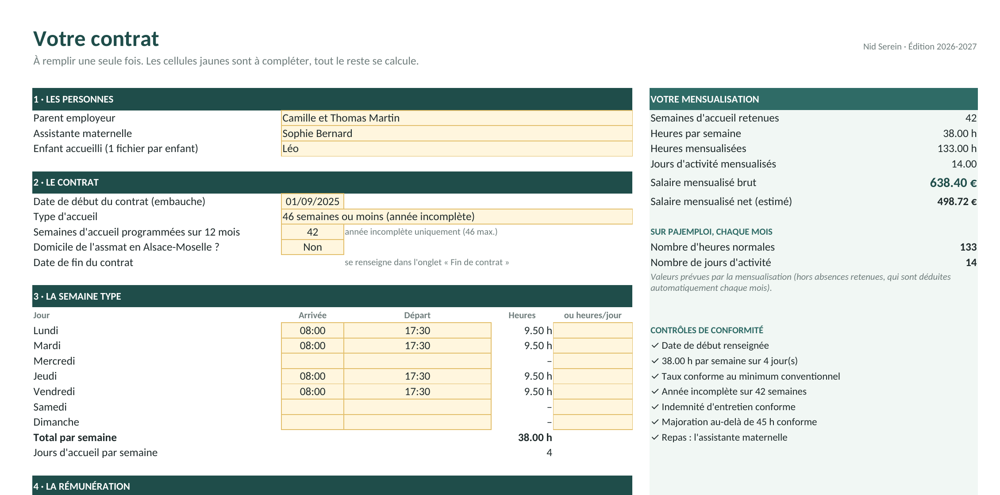
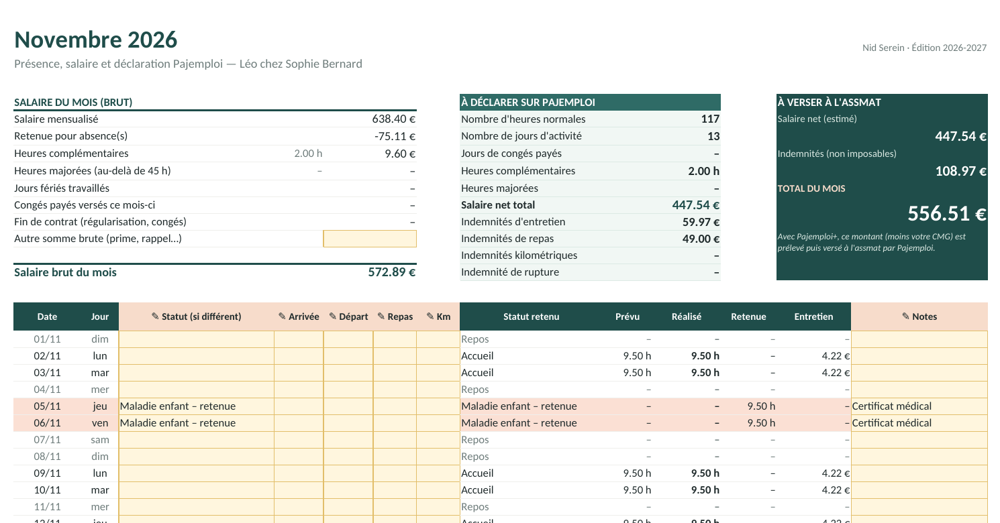

NID SEREIN · OUTILS POUR PARENTS EMPLOYEURS
Le guide du parent employeur
Assistante maternelle agréée · Édition 2026-2027
Mensualisation, absences, déclaration Pajemploi, congés payés, fin de contrat : les règles expliquées simplement, et la façon de les appliquer en quelques minutes avec votre kit.

Sommaire
Tout ce qu'il faut savoir, rien de plus
Employer une assistante maternelle, c'est devenir employeur sans service RH. Ce guide va droit à l'essentiel et renvoie à chaque fois à l'onglet du kit qui fait le calcul pour vous.
1. Votre kit en 10 minutes3
2. Chaque mois, 3 minutes4
3. La mensualisation5
4. Les absences6
5. Heures en plus, fériés, indemnités7
6. Déclarer sur Pajemploi8
7. Les congés payés9
8. La fin du contrat11
9. Les 10 erreurs qui coûtent cher13
10. Votre calendrier de l'année14
11. Barèmes et sources15
12. Modèles de courriers16
Ce que contient votre kit
| Fichier | À quoi il sert |
|---|
| Kit-Assmat-2026-2027.xlsx | Le classeur à remplir : contrat, 12 feuilles mensuelles (juin 2026 à mai 2027), récapitulatif, congés payés, fin de contrat, barèmes. |
| Kit-Assmat-2026-2027-EXEMPLE.xlsx | Le même classeur déjà rempli (Léo, accueilli chez Sophie 38 h par semaine, 42 semaines par an) pour voir une année complète. |
| Guide du parent employeur.pdf | Ce guide. |
| Modèles de courriers.docx | 5 courriers modifiables : retrait de l'enfant, certificat de travail, solde de tout compte, régularisation, dates de congés. |
Ouvrir le classeur
Excel (Windows, Mac)
Double-cliquez sur le fichier. Version 2010 ou plus récente.
Google Sheets (gratuit)
drive.google.com › Nouveau › Importer un fichier, puis « Ouvrir avec Google Sheets ». Votre copie reste privée.
Un fichier par enfant
Depuis janvier 2026, Pajemploi demande une déclaration distincte pour chaque enfant d'une même fratrie. Faites une copie du classeur pour chaque enfant (et chaque contrat).
1 · Démarrer
Votre kit en 10 minutes
On remplit une seule fois l'onglet Contrat avec votre contrat de travail sous les yeux. Les cellules jaunes sont à compléter ; tout le reste se calcule.

L'onglet Contrat. À droite, la mensualisation et les contrôles de conformité se mettent à jour en direct.
Les personnes et le contrat. Date d'embauche, type d'accueil (52 semaines, ou 46 semaines ou moins) et, en année incomplète, le nombre de semaines d'accueil programmées.
La semaine type. Horaires d'arrivée et de départ de chaque jour, ou directement un nombre d'heures si les horaires varient.
Le taux horaire. Tel qu'il figure au contrat, en précisant « brut » ou « net ». Le kit vérifie qu'il respecte le minimum conventionnel.
Les indemnités et les congés. Entretien, repas, kilomètres, et le mode de paiement des congés payés prévu au contrat.
Les périodes sans accueil. Congés de l'assmat, semaines non programmées, vacances de l'enfant : les jours concernés sont préremplis dans les mois.
Puis, une fois : les congés acquis l'an dernier
Dans l'onglet Congés payés, indiquez le total des salaires bruts perçus du 1er juin 2025 au 31 mai 2026 (relevés Pajemploi). Le kit calcule l'indemnité due et la répartit sur les mois où les congés sont pris.
2 · Chaque mois
3 minutes par mois
Chaque feuille mensuelle est préremplie à partir du planning. Vous ne notez que ce qui change : une absence, un départ plus tard, un jour en plus.

Novembre dans l'exemple : deux jours de maladie avec certificat (retenus), deux soirées plus longues (heures en plus en orange), une journée chez les grands-parents (payée).
| Statut à choisir | Effet sur le salaire |
|---|
| Accueil | Jour normal. Saisissez l'arrivée et le départ seulement s'ils diffèrent du planning. |
| Absence enfant – payée | L'enfant ne vient pas du fait des parents : le salaire est dû, pas d'indemnité d'entretien. |
| Maladie enfant – retenue | Avec certificat médical, dans la limite de la convention (voir p. 6). |
| Absence assmat – non payée | Arrêt maladie de l'assmat, absence non autorisée, enfant malade de l'assmat… |
| Congé payé assmat Congé sans solde assmat | Congés acquis (payés) ou au-delà des droits (non payés). |
| Férié chômé payé Férié travaillé (+10 %) 1er mai travaillé | Les jours fériés sont détectés automatiquement ; changez le statut si l'enfant est accueilli. |
| Semaine non programmée | Année incomplète : semaine sans accueil prévue au contrat, déjà exclue du salaire mensualisé. |
Imprimez-la : c'est votre feuille de présence
Chaque mois tient sur une page A4 avec les signatures du parent et de l'assmat en bas. Un document simple qui évite les désaccords en fin de contrat.
3 · Les bases
La mensualisation
Le salaire d'une assistante maternelle est toujours mensualisé : le même montant chaque mois, quel que soit le nombre de jours du mois. Tout le reste en découle.
Accueil sur 52 semaines
L'enfant est accueilli toute l'année, sauf pendant les congés de l'assmat (5 semaines au plus). Les congés payés sont inclus dans le salaire.
taux × heures/semaine × 52 ÷ 12
Exemple officiel : 4,50 € × 40 h × 52 ÷ 12 = 780 € brut par mois.
Accueil sur 46 semaines ou moins
Vous retirez des 52 semaines celles où l'enfant ne vient pas, et les 5 semaines de repos de l'assmat (sans compter deux fois les semaines communes). Les congés payés sont versés en plus.
taux × heures/semaine × semaines ÷ 12
Exemple officiel : 4,50 € × 40 h × 36 ÷ 12 = 540 € brut par mois.
Le taux horaire minimum
| Au 1er juin 2026 | Brut / heure | Net / heure |
|---|
| Minimum conventionnel (avenant n°10 du 5 février 2026) | 4,20 € | 3,28 € |
| Avec le titre « assistant maternel – garde d'enfants » | 4,37 € | 3,41 € |
| Minimum légal (0,281 × SMIC) | 3,46 € | — |
Contrat signé avant juin 2026 ?
L'ancien minimum était de 3,64 € brut. Si votre taux est inférieur à 4,20 € brut, il doit être relevé depuis le 1er juin 2026. L'onglet Contrat vous le signale immédiatement.
Bon à savoir
Le taux se négocie librement au-dessus du minimum, mais une indexation automatique (sur le SMIC par exemple) ne peut pas être prévue au contrat. La mensualisation se calcule toujours sur 12 mois à partir de la date d'embauche, même pour un contrat plus court.
4 · Les absences
Quand retenir, et combien
C'est la source de litige numéro un. La règle est simple : si l'enfant ne vient pas du fait des parents, le salaire est dû. Les retenues sont limitées à des cas précis.
| Situation | Salaire |
|---|
| Vacances ou jours « en famille » non prévus au contrat, enfant gardé par les grands-parents, parent en congé ou au chômage | Dû en entier |
| Enfant malade, avec certificat médical ou bulletin d'hospitalisation | Retenue possible : 5 jours d'absences courtes par période de 12 mois (à compter de l'embauche), et une absence d'au moins 14 jours calendaires consécutifs. Au-delà, il faut reprendre le paiement ou rompre le contrat. |
| Arrêt maladie de l'assmat, congé sans solde, congé pour enfant malade de l'assmat | Retenue |
| Jour férié chômé (hors 1er mai) | Payé si l'assmat a travaillé le dernier jour prévu avant et le premier jour prévu après |
| 1er mai chômé | Toujours payé |
La formule de la convention (article 111)
52 semaines : on compte en heures.
salaire × heures d'absence ÷ heures prévues dans le mois
46 semaines ou moins : on compte en jours.
salaire × jours d'absence ÷ jours prévus dans le mois
Les « heures (ou jours) prévues dans le mois » sont celles du planning habituel, en comptant aussi les semaines sans accueil, les jours fériés et les jours d'absence. C'est ce que fait la colonne Prévu de vos feuilles mensuelles.
Exemple officiel (DREETS)
Salaire de 780 €, une semaine de 40 h sans solde en février, 160 h prévues dans le mois : retenue = 780 × 40 ÷ 160 = 195 €. Le kit retrouve exactement ce montant.
À ne pas faire
Retenir « au trentième » ou « au jour calendaire », ou retenir une absence sans certificat médical. Le kit vous alerte dès que les retenues pour maladie de l'enfant dépassent 5 jours.
5 · Ce qui s'ajoute
Heures en plus, jours fériés, indemnités
Heures complémentaires et majorées
Une heure est « en plus » dès qu'elle dépasse le planning prévu. Jusqu'à 45 h dans la semaine, c'est une heure complémentaire, payée au taux normal (sauf majoration prévue au contrat). Au-delà de 45 h, c'est une heure majorée, avec au moins 10 % de majoration.
L'exemple du guide Pajemploi
Contrat de 40 h, 3 € net de l'heure, 3,50 € pour les heures majorées. Une semaine de 50 h : 5 h complémentaires et 5 h majorées. Salaire du mois = 370 + 5 × 3 + 5 × 3,50 = 402,50 € net. Le kit trouve le même résultat.
Jours fériés travaillés
Un jour férié travaillé (prévu au contrat ou accepté par l'assmat) est payé avec 10 % de majoration. Les heures travaillées le 1er mai sont payées en plus du salaire mensualisé.
Indemnité d'entretien
Elle couvre l'eau, l'électricité, les jeux, le matériel… Elle n'est due que les jours où l'enfant est présent.
| Durée d'accueil dans la journée | Minimum au 1er juin 2026 |
|---|
| 9 heures | 3,92 € (90 % du minimum garanti de 4,35 €) |
| Moins de 9 heures | Le plus élevé entre 2,65 € et 3,92 € ÷ 9 × nombre d'heures |
| Plus de 9 heures | 3,92 € + 0,435 € par heure au-delà de 9 h (11 h → 4,79 €) |
Repas et kilomètres
Si l'assmat fournit les repas, une indemnité de repas fixée au contrat est due pour chaque repas fourni. Si vous fournissez les repas, rien n'est dû. Les trajets en voiture demandés par les parents ouvrent droit à une indemnité kilométrique comprise entre le barème de l'administration et le barème fiscal, partagée entre les familles selon le nombre d'enfants transportés.
Les indemnités ne sont pas du salaire
Elles ne supportent pas de cotisations et se déclarent dans des cases séparées sur Pajemploi. Ne les ajoutez jamais au salaire net.
6 · Pajemploi
Déclarer, case par case
Chaque feuille mensuelle contient un cadre vert « À déclarer sur Pajemploi » : les chiffres sont dans l'ordre du formulaire.

| Case Pajemploi | Ce qu'il faut y mettre |
|---|
| Période | Du 1er au dernier jour du mois (sauf embauche ou départ en cours de mois) |
| Nombre d'heures normales | Les heures mensualisées, pas les heures réelles, diminuées des absences retenues |
| Nombre de jours d'activité | Les jours mensualisés (arrondis au-dessus), diminués des absences retenues |
| Congés payés | Année incomplète : jours de congés payés versés ce mois-ci. Accueil sur 52 semaines : rien (ils sont dans le salaire). Toujours 0 la première année. |
| Heures complémentaires / majorées | À distinguer, comme dans le kit |
| Salaire net total | Salaire mensualisé − retenues + heures en plus + congés payés versés |
| Indemnités | Entretien, repas, kilomètres, et indemnité de rupture le dernier mois |
Quand ? Comment payer ?
Entre le 25 du mois et le 5 du mois suivant ; une déclaration validée reste modifiable pendant un mois. Avec Pajemploi+ (gratuit), Pajemploi prélève le salaire, moins votre complément de mode de garde, et le verse à l'assmat.
Pourquoi le net est « estimé »
Le kit passe du brut au net avec un taux de cotisations salariales de 21,88 % (23,18 % en Alsace-Moselle), qui correspond aux minima officiels (4,20 € brut = 3,28 € net). Si votre contrat fixe un taux net, saisissez-le en net : votre salaire net déclaré sera exact. Pajemploi calcule ensuite le brut et les cotisations.
7 · Congés payés
Acquérir, prendre, payer
Combien de jours ?
2,5 jours ouvrables par mois travaillé du 1er juin au 31 mai, arrondis au jour supérieur, dans la limite de 30 jours (5 semaines). Un mois même partiellement travaillé compte. Un arrêt maladie ouvre aussi des droits (2 jours par mois). Si l'assmat n'a pas acquis 30 jours, elle peut compléter son repos par des congés sans solde.
Quand les prendre ?
- Avec un seul employeur, c'est vous qui fixez les dates, et vous les communiquez au plus tard le 1er mars.
- Avec plusieurs employeurs, on cherche un accord avant le 1er mars ; à défaut, l'assmat fixe elle-même 4 semaines entre le 1er mai et le 31 octobre et 1 semaine en hiver.
- Le congé principal (2 à 4 semaines continues) se prend entre le 1er mai et le 31 octobre ; tout doit être soldé avant le 30 avril suivant.
- Une semaine complète de congés compte pour 6 jours ouvrables, quel que soit le nombre de jours travaillés. Un jour férié n'est pas décompté.
Combien payer ? La méthode la plus favorable
Maintien : salaire mensualisé ÷ 26 × jours
Dixième : 10 % des salaires bruts de la période
Le dixième se calcule sur tous les salaires bruts du 1er juin au 31 mai, congés payés compris, sans les indemnités. On verse le plus élevé des deux.
| 52 semaines | 46 semaines ou moins |
|---|
| Paiement | Le salaire est maintenu pendant les congés. Si le dixième est plus élevé, le complément est versé avec la dernière semaine de congés. | L'indemnité s'ajoute au salaire, selon le contrat : en une fois en juin, lors du congé principal, ou au fur et à mesure des congés pris. |
| Dans le kit | Complément ajouté automatiquement le bon mois | Montant ajouté automatiquement au(x) bon(s) mois |
7 · Congés payés (suite)
Un exemple chiffré
Accueil sur 36 semaines, 40 h, 4,50 € brut : salaire mensualisé 540 €. Au 31 mai, l'assmat a acquis 30 jours et perçu 6 750 € bruts sur l'année.
| Méthode | Calcul | Montant |
|---|
| Maintien de salaire | 540 ÷ 26 × 30 | 623,08 € |
| Dixième | 10 % × 6 750 | 675,00 € |
Le dixième est plus favorable : 675 € sont dus. Payés au fur et à mesure, 3 semaines en août (18 jours) donnent 18 ÷ 30 × 675 = 405 € en plus du salaire d'août, puis 135 € pour chacune des deux autres semaines.

L'onglet Congés payés de l'exemple : la méthode la plus favorable est repérée et le calendrier de paiement se remplit seul.
8 · Fin du contrat
Rompre le contrat sans rien oublier
Pas de rupture conventionnelle ni de licenciement « classique » : les parents exercent leur droit de retrait de l'enfant, quel qu'en soit le motif.
Le préavis
| Ancienneté à la date de la lettre | Retrait par les parents | Démission de l'assmat |
|---|
| Moins de 3 mois | 8 jours calendaires | Aucun |
| De 3 mois à moins d'1 an | 15 jours calendaires | 15 jours calendaires |
| 1 an et plus | 1 mois | 1 mois |
Le préavis démarre à la première présentation de la lettre recommandée (ou à la remise en main propre contre décharge). Des congés payés pris pendant le préavis le prolongent. Pendant la période d'essai, il n'y a pas de préavis. En cas de suspension ou de retrait d'agrément, la rupture est immédiate, sans préavis ni indemnité de rupture.
Les sommes à verser
| Somme | Quand | Calcul |
|---|
| Indemnité de rupture | Retrait de l'enfant (ou décès de l'enfant) après au moins 9 mois d'accueil. Pas en cas de démission, de retraite, de faute grave ou de retrait d'agrément. | 1/80e des salaires bruts perçus pendant tout le contrat. Sans cotisations. |
| Congés payés | Toujours | Les congés acquis et non payés, plus ceux en cours d'acquisition, selon la méthode la plus favorable |
| Régularisation | Accueil sur 46 semaines ou moins | Heures réellement effectuées − heures payées depuis la dernière date anniversaire. Seulement si l'écart est en faveur de l'assmat. |
Documents à remettre
Dernier bulletin (Pajemploi), certificat de travail, reçu pour solde de tout compte, attestation France Travail. Les modèles sont fournis (p. 16).
8 · Fin du contrat (suite)
Le solde de tout compte, calculé
Saisissez le motif, la date de la lettre et le dernier jour du contrat : le kit calcule le préavis, la régularisation, les congés payés et l'indemnité de rupture, puis reporte automatiquement les sommes sur le dernier mois.

La régularisation, en pratique
En année incomplète, faites chaque année, à la date anniversaire du contrat, une régularisation prévisionnelle écrite et signée (modèle fourni). Elle ne donne lieu à aucun paiement en cours de contrat : on compense tout à la fin. Les heures des jours fériés chômés payés et des absences payées comptent comme effectuées.
9 · À éviter
Les 10 erreurs qui coûtent cher
1
Garder un taux horaire sous le nouveau minimum
4,20 € brut depuis le 1er juin 2026 (4,37 € avec le titre de branche).
Le kit : contrôle automatique dans l'onglet Contrat.
2
Déclarer les heures réelles au lieu des heures mensualisées
Pajemploi attend les heures et jours prévus par la mensualisation, pas ceux du mois.
Le kit : cadre « À déclarer sur Pajemploi ».
3
Retenir une absence qui doit être payée
Vacances non prévues des parents, garde par la famille : le salaire est dû.
Le kit : statut « Absence enfant – payée ».
4
Dépasser la limite des retenues pour maladie
5 jours d'absences courtes sur 12 mois, avec certificat médical, sauf absence d'au moins 14 jours consécutifs.
Le kit : alerte au-delà de 5 jours.
5
Calculer une retenue « au trentième »
La convention impose une formule en heures (52 semaines) ou en jours (46 semaines ou moins).
Le kit : formule officielle, appliquée jour par jour.
6
Ajouter les indemnités au salaire net
Entretien, repas et kilomètres ont leurs propres cases et ne supportent pas de cotisations.
Le kit : salaire et indemnités séparés.
7
Une indemnité d'entretien trop basse, ou versée à tort
Minimum 3,92 € pour 9 h et 2,65 € par jour ; rien les jours où l'enfant est absent.
Le kit : calcul à la journée, selon la durée réelle.
8
Payer les congés au maintien sans comparer au dixième
La loi impose la méthode la plus favorable à la salariée.
Le kit : comparaison automatique.
9
Année incomplète : oublier de payer les congés en plus
Le salaire mensualisé ne contient pas les congés payés dans ce cas.
Le kit : ajout automatique selon le mode prévu au contrat.
10
Bâcler la fin de contrat
Préavis, régularisation, congés acquis et en cours, indemnité de rupture : chaque oubli peut finir aux prud'hommes.
Le kit : onglet Fin de contrat.
10 · Calendrier
Votre année de parent employeur
Chaque mois, du 25 au 5Déclaration Pajemploi, puis salaire versé à la date prévue au contrat.
Avant le 1er marsFixer et communiquer les dates de congés payés de l'année.
1er maiDébut de la période du congé principal (jusqu'au 31 octobre).
31 maiFin de la période d'acquisition : l'onglet Congés payés donne l'indemnité due. Dernier mois de cette édition du kit.
JuinPaiement des congés si le contrat prévoit « en une fois en juin ». Démarrage de l'édition suivante du kit, avec les montants reportés.
Date anniversaire du contratAnnée incomplète : régularisation prévisionnelle écrite et signée, et planification des semaines d'accueil des 12 mois suivants.
À chaque revalorisationSMIC, minimum garanti, salaires conventionnels : mettez à jour l'onglet Barèmes, tout le classeur suit.
Au printempsAttestation fiscale Pajemploi : les frais de garde d'un enfant de moins de 6 ans ouvrent droit à un crédit d'impôt (voir impots.gouv.fr).
30 avrilDate limite pour solder les congés acquis l'année précédente.
Le bon réflexe
En cas de doute sur une situation particulière, le relais petite enfance (RPE) de votre commune est un interlocuteur gratuit, tout comme les services de renseignement de la DREETS de votre région.
11 · Références
Barèmes au 1er juin 2026
| Paramètre | Valeur | Texte |
|---|
| SMIC horaire brut | 12,31 € | Arrêté du 22 mai 2026 |
| Minimum garanti (MG) | 4,35 € | Au 1er juin 2026 |
| Salaire minimum conventionnel brut | 4,20 € | Avenant n°10 du 5 février 2026, arrêté d'extension du 4 mai 2026 |
| Minimum avec titre de branche | 4,37 € | Même avenant |
| Minimum légal (0,281 × SMIC) | 3,46 € | Art. D.423-9 CASF |
| Indemnité d'entretien, 9 h | 3,92 € | Art. 114-1 CCN (90 % du MG) |
| Plancher d'entretien par jour | 2,65 € | Art. 114-1 CCN |
| Majoration au-delà de 45 h | 10 % min. | Art. 110 CCN |
| Jour férié travaillé | +10 % | Art. 47-2 CCN |
| Indemnité de rupture | 1/80e | Art. 121-1 CCN (9 mois d'accueil minimum) |
Sources
- Convention collective nationale des particuliers employeurs et de l'emploi à domicile du 15 mars 2021 (IDCC 3239), socle spécifique assistant maternel.
- DREETS Bourgogne-Franche-Comté, Guide assistants maternels, juin 2026.
- DREETS Pays de la Loire, Rémunération, indemnités et frais, fiche au 12 juin 2026.
- DREETS Occitanie (DDETS 31), fiches mensualisation et régularisation, novembre 2024.
- Pajemploi, Guide pratique pour le parent employeur d'un assistant maternel agréé ; bulletin d'information n°6.
- Code de l'action sociale et des familles, articles L.423-1 et suivants, D.423-6 à D.423-9.
Contrôlé sur les exemples officiels
Les formules du classeur ont été vérifiées sur les exemples chiffrés de ces guides : mensualisation, retenues pour absence, entretien, heures complémentaires et majorées, congés payés (maintien et dixième), régularisation, indemnités de fin de contrat.
12 · Modèles
Modèles de courriers
Les cinq modèles sont fournis au format Word, prêts à compléter : remplacez les passages entre crochets.
| Modèle | Quand l'utiliser |
|---|
| Lettre de retrait de l'enfant | Mettre fin au contrat (recommandé avec accusé de réception, ou remise en main propre contre décharge) |
| Certificat de travail | À remettre le dernier jour du contrat |
| Reçu pour solde de tout compte | Détail des sommes versées à la fin du contrat |
| Régularisation prévisionnelle annuelle | Année incomplète, à chaque date anniversaire |
| Dates de congés payés | À communiquer avant le 1er mars |
Extrait — Lettre de retrait de l'enfant
Madame,
Par la présente, nous vous informons de notre décision de mettre fin au contrat de travail qui nous lie depuis le [date d'embauche] pour l'accueil de notre enfant [prénom], en exerçant notre droit de retrait conformément à l'article 119 de la convention collective des particuliers employeurs et de l'emploi à domicile.
Votre préavis de [durée] débutera à la date de première présentation de ce courrier. Votre contrat prendra fin le [date]. Nous vous remettrons à cette date votre certificat de travail, le reçu pour solde de tout compte et l'attestation destinée à France Travail.
Nous vous remercions pour [l'attention portée à notre enfant]…
Avertissement. Ce guide et le classeur qui l'accompagne sont des outils d'information et d'aide au calcul, établis à partir des textes et fiches officielles en vigueur au 1er juin 2026. Ils ne remplacent pas un conseil juridique personnalisé. Les montants nets sont des estimations ; Pajemploi calcule les cotisations exactes. En cas de changement de barème, mettez à jour l'onglet Barèmes du classeur.
© Nid Serein, 2026 — usage personnel. Mis à jour le 28 octobre 2026.